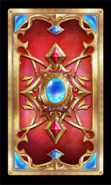
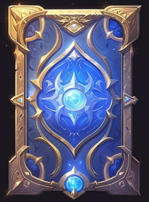

简介
游戏人生观是一种特别的人生观。 如果你想了解更多相关信息，请点击这里。
这是一个关于我的游戏人生的数据界面。我会在这里记录我的游戏人生的数据，包括游戏时间、游戏成就、游戏收获等等。
生命卷轴
1. 五项基础资源数据
2. 能力值与经验值
提示：点击柱状图有颜色的部分即可跳转查看详细经验值与计划面板。
| 能力 | 能力值条 | 能力数据 |
|---|---|---|
| 能力1 | 25 | |
| 能力2 | 19 | |
| Item Three | Morbi faucibus arcu accumsan lorem. | 29.99 |
| Item Four | Vitae integer tempus condimentum. | 19.99 |
| Item Five | Ante turpis integer aliquet porttitor. | 29.99 |
| 100.00 | ||
3. 技能卡
提示：点击技能卡图标可跳转至技能详细面板。更多技能卡牌在详细面板中。
|  |
4. 人生目标
提示：点击人生目标可跳转至目标详细面板。更多目标在详细面板中。
当前目标：xxx
5. 成就卡
提示：点击成就卡图标可跳转至成就详细面板。更多成就在详细面板中。
|  |
6. 近期目标（意义单位）
提示：点击图表可跳转至目标详细面板。
7. 近期快乐
提示：点击图表可跳转至快乐详细面板。
近期报告
月报告（2024.2）
- xxx
- xxx
- xxx
- xxx
- xxx
- xxx